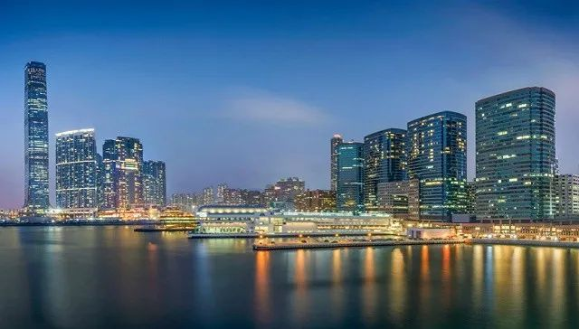

前所未有，香港海港城为商户减免一半租金
原文链接 备份链接 来源：图虫 记者：卢奕贝 编辑：牙韩翔 “ 但对经历了去年大半年的社会局势动荡，又遭遇肺炎疫情雪上加霜的香港零售行业来说，减免租金只是杯水车薪。 ” 疫情之下，香港最大的高端购物中心、亚洲最赚钱的商城海港城，也开始减租 …
香港海港城 。来源：图虫
记者：卢奕贝 编辑：昝慧昉
“
“去年的情况是第三、四季度越来越严重，今年第一季度更加差。”
”
香港暂时失去了它“购物天堂”的光环。这里的大型购物中心正在经受前所未有的考验。
香港大型地产商九龙仓置业（01997.HK，下称九置），持有多个香港核心购物中心，包括时代广场、荷里活广场及海港城。3月5日，这家公司公布了其2019年的业绩，集团整体净利润同比大跌78%，其中，商场营业额租金（分成租金）在去年第三、四季度分别下跌了49%及78%。
报告期内，受香港社会事件影响，访港旅客大跌，令购物商场经营困难。海港城的总收入及经营利润减少了2%，商场租户零售额全年下跌了23%；时代广场的收入和经营利润分别减少3%和2%，商场租户零售额全年下跌了19%；荷里活广场的收入及营业盈利均跌3%，
此前界面新闻曾报道过，全球最大奢侈品牌之一的Louis Vuitton，由于业主九置拒绝为品牌位于铜锣湾时代广场的分店减租，计划关闭该分店。该分店于2013年开幕，月租金高达500万港元。
九龙仓置业主席兼常务董事吴天海在业绩报告会上被问及此事，回应称，去年及今年都有奢侈品牌商户退租，但是有退有入，这样的调整年年都有。至于减租的情况，吴天海则以与商户有保密协议为由未对外透露，仅表示新租约会随市况浮动。
虽然截止2019年年末，九置旗下海港城及时代广场的出租率并未受到太大影响，仍保持在97%的水平，然而新冠疫情令情况日益艰难。
“去年的情况是第三、四季度越来越严重，今年第一季度更加差。”吴天海说。
2月初，海港城内许多商铺闭店暂停营业，其中围上了装修板的门面达到24个。对这座“香港零售业的风向标”，这种情况并不常见。
自2007年起的10年间，受益内地游客的访港购物热潮，海港城销售额年均复合增长率超过10%。2018年海港城销售额超过370亿元港元，平均每天超过一亿元港元。
吴天海在回应海港城商铺空置一事时称，个别铺面围板不代表无人承租，有可能正值装修。不过，他也承认，今年续租租金随市况变化而受压。
业绩受影响的不止九置。据港媒报道，2月底，香港中环另一大型地标商场IFC Mall场内，也有10个铺位封板。
持有IFC Mall、沙田新城市广场、APM、上水广场等20余个购物中心的新鸿基地产在最新财报中也提到，集团的零售业务组合无可避免受到不同程度的影响，续租及新租租金面对短期压力。
去年的社会事件加上新冠疫情的双重打击，让香港商业遭受重创。
3月3日，美联工商铺资料研究部发布了最新的香港核心区商户调查报告，今年1、2月份香港四大核心购物区尖沙嘴、旺角、铜锣湾及中环，街边空置商铺数量由去年9月的482家，在半年后急升43%至689家，空置率达9.2%。是该公司自2016年有统计以来的新高。
这场寒冬，也让香港各界决定守望相助。
2月11日，香港地产建设商会发布了一份声明，指出鉴于零售餐饮业当前的困难境况，旗下会员将继续与有需要的租户按个别情况探讨各种可行办法，包括提供宽减租金等措施，以纾缓他们的经营压力。
新鸿基地产、新世界集团、恒隆地产和太古地产纷纷响应，或减免租金，或承诺加强推广，以共度时艰。这些地产公司的减免措施，将覆盖大量香港核心商场。
也有地产商在权衡之下，选择优化资产组合。
2月26日，大型地产商新世界发展有限公司宣布作价30亿港元，向香港地铁出售其持有的九龙湾德福广场二期商场及将军澳PopCorn 2商场收益权。新世界发展有限公司的执行副主席郑志刚，在2月28日举办的2020财政年度中期业绩会上解释称，出售并不是看淡后市，这些非核心资产大多是很多年前买入的股权占比较小的资产，清售更多是一种优化组合的作用。“现金为王”，也是公司应对当前困难时期的策略。
但无论时下情况如何，几乎所有商家都在强调对未来持有信心。
郑志刚称，公司目前有充足的实力能够化危为机，有充足的现金可以用。未来合适的时间还会入市，继续增强核心业务。吴天海则表示，经营商场不是看短线，中长线来看，以香港的吸引力，游客生意会复苏，相信可重返以往水平，甚至更上层楼。只要能继续维持方针，有实力捱过，仍然有前景。
未经授权 禁止转载

原文链接 备份链接 来源：图虫 记者：卢奕贝 编辑：牙韩翔 “ 但对经历了去年大半年的社会局势动荡，又遭遇肺炎疫情雪上加霜的香港零售行业来说，减免租金只是杯水车薪。 ” 疫情之下，香港最大的高端购物中心、亚洲最赚钱的商城海港城，也开始减租 …
原文链接 备份链接 来源：雪球App，作者： 腾讯棱镜深网，（https://xueqiu.com/6718098612/141371565） @今日话题 作者 | 郭亦非 编辑 | 张庆宁 出品 | 棱镜·腾讯小满工作室 2月14日，情 …
原文链接 备份链接 没有想到终于定下决心动笔写下的第一篇（公众号）文章，是记录这样的一段经历。 2020年1月17日，临时决定回武汉，原计划初五（1月29日）回港。 可新冠肺炎发展地太快了。 1月23日，武汉封城。 3月4日，我搭乘首班 …
原文链接 备份链接 1月31日大年初七，奢侈品门店云集的尖沙咀广东道上行人稀少。来源：美联工商铺 记者：卢奕贝 编辑：昝慧昉 “ 疫情对香港商业的打击开始集中显现。 ” 3月3日，美联工商铺资料研究部发布了最新的香港核心区商户调查报告，今 …
原文链接 备份链接 上游产业链供应受阻、市场需求不足、现金流日益“吃紧”、防疫能力较弱、召回员工风险高等问题，使得中小微企业复工之路，显得困难重重。 记者 | 王晓珊 实习生 | 丁宁 编辑 | 盛倩玉 茅台镇一家酒企老板李磊，这几天愁 …